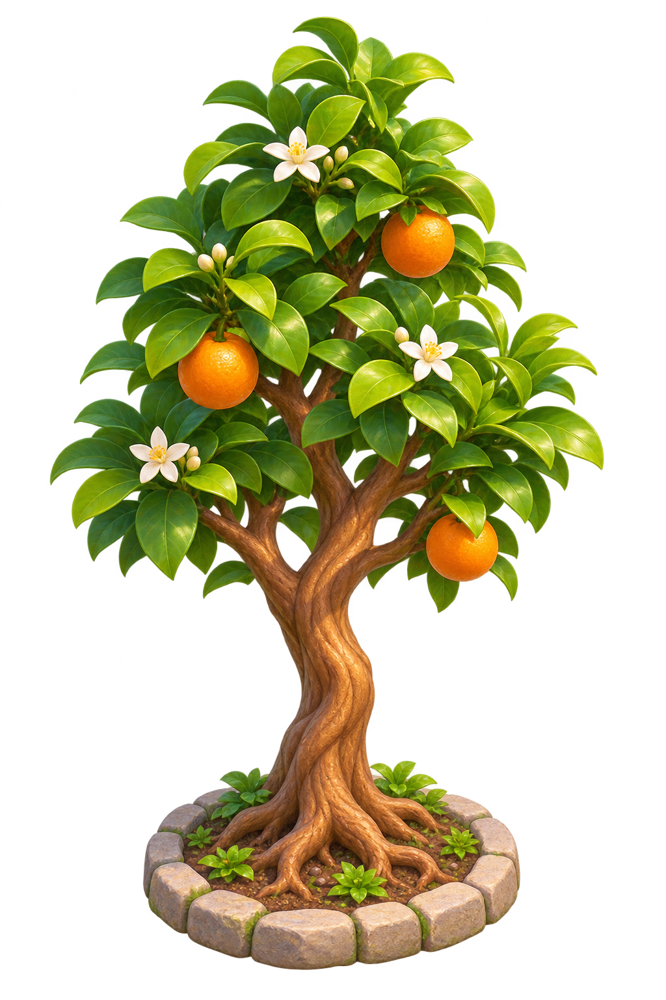

<!doctype html><html lang="zh-CN"><meta charset="utf-8"><meta name="viewport" content="width=device-width,initial-scale=1,viewport-fit=cover"><title>我们的岛 · 漫步</title><link rel="stylesheet" href="our-island.css?v=20261109-load2"><main id="island"><canvas id="world" aria-label="我们的岛，使用左下摇杆或方向键沿路漫步"></canvas><header><h1>我们的岛</h1><button id="mapToggle">看看地图</button></header><p id="hint" role="status">从码头出发，去看看家庭树</p><button id="visit" hidden>看看家庭树</button><div id="stick" role="group" aria-label="行走摇杆"><span class="arrows">↑<br>←　　→<br>↓</span><i id="knob"></i></div><button id="home">回到码头</button><div id="loading" role="status">小岛正在醒来…</div><dialog id="closeup" aria-labelledby="treeTitle"><div class="tree-scene"><h2 id="treeTitle">我们的家庭树</h2><p>把一起长大的日子，留在这里</p><div class="close-girl" aria-label="开心站在家庭树旁"></div><div class="tree-note">从一棵小树，长成家的记忆<br><small>成长记录、家庭便签与爱心将在后续接入</small></div><button id="back">回到小路</button></div></dialog></main><script src="our-island.js?v=20261109-load2"></script></html>
